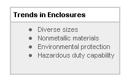

Control Engineering Staff

Protecting delicate controls, electronics, and wiring from acrid
industrial environments and the occasional out-of-control forklift
is no easy task. However, it is easier in some places than in
others. Not all enclosures specified by control engineers end up
enduring industrial hazards. Of the 211 respondents to Control
Engineering's recently e-mailed research questionnaire, many had
less demanding duty in mind.
The survey by Control Engineering and Reed Research
(Newton, MA) looked at a wide variety of topics of interest to
enclosure specifiers. Questionnaire topics included:
- Primary applications for enclosure use
- Types of protection specified
- Types of cooling specified
- Principal areas of application
- Levels of protection specified
- Types of materials specified
- Current and future purchasing plans.
Results of the online survey showed that the majority (79%) of
those responding were directly involved in specifying, recommending,
and/or buying enclosures. Of these respondents, 48% were involved in
specifying enclosures for in-plant requirements, 21% for OEM
(resale) requirements, with the remainder making buying decisions
for both in-plant and OEM requirements.
Who is using them
where?
Of those applications destined for direct use by the control
engineer, the greatest majority will see duty on the plant floor (as
the graphic shows). These applications are generally considered
benign. However, exposure to dust, dirt, vibration, heat, cold,
EMI/RFI, natural disasters, and physical abuse are all possible in
ordinary in-plant environments. Additionally, security and
resistance to tampering and vandalism are frequently considered when
an enclosure is specified.
Hazardous-duty environments remain among the more specific uses
for enclosures.
According to Bill Southard, president of DST Controls (Benicia,
CA), ''It used to be that Class I, Div. 1 (or 2) meant putting a
size 0 motor starter in a 300-lb enclosure that looked like it was
made in the former Soviet Union.
''Today, thanks to National Fire Protection Association standards
and Z-Purge capability, these same enclosures can be smaller,
lighter, and much less costly. There are still areas in a few
industries that require explosion-proof enclosures, but most
integrators today will try to use a purged enclosure in the
classified area.'' Not so
tough duty
According to the survey, almost as many enclosures find their way
into office environments as hazardous duty or sanitary/washdown
environments. Function of these enclosures cannot be overlooked.
Office environment applications of enclosures include heating,
ventilation, and air-conditioning, behind-the-walls accommodation of
electrical terminations, server room electronics containment,
protection of modems, remote environmental monitoring devices, and
utility services. Other non-factory, but not strictly ''office,''
environment applications for enclosures can include marine/dockside
uses, commercial construction/equipment, underground tunnel
services, and analysis labs.
According to Mike Jackson, engineering manager at Stahlin
Non-Metallic Enclosures (Belding, MI), ''Non-factory users of
enclosures have been a leader in the specification of thermoset
fiberglass enclosures. Non-factory applications have been a key
driver for manufacturers of non-metallic enclosures to develop new
enclosure products and accessories. Because the public more often
views these products, designers are more apt to look at the
enclosure design and material as an integral part of the overall
product design/function compared to enclosures for factory use.''
Enclosures are ubiquitous and the need to correctly specify them
is an absolutely necessary in the control engineering design
process. With today's expanded enclosure offerings, preparing this
first line of defense for control equipment has been made simpler
and more convenient.
–Control Engineering Staff
Comments? E-mail mhoske@reedbusiness.com
|